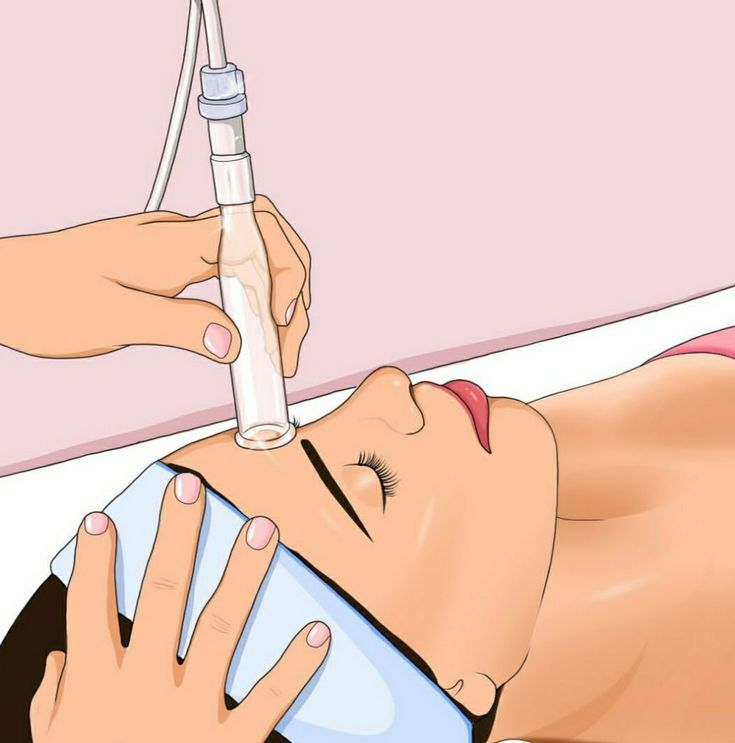
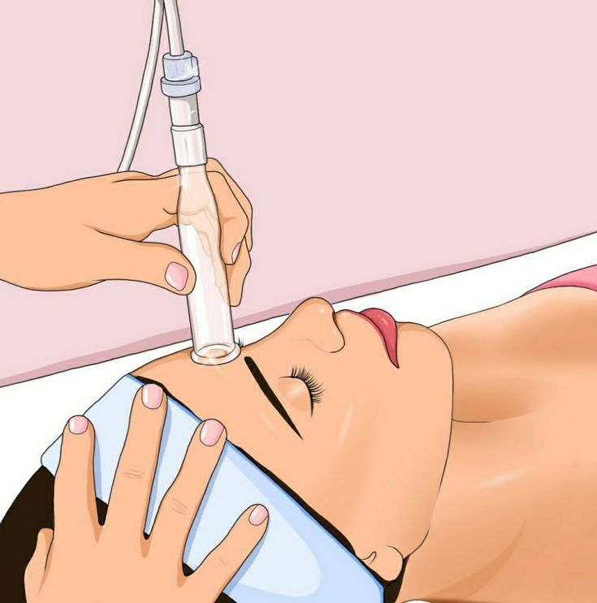

El nombre "cosmetología" proviene del griego antiguo. Se deriva de la palabra griega "kosmetikos", que significa "relativo al adorno" o "que embellece". En griego, "kosmetikos" está relacionado con "kosmos", que significa "orden" o "arreglo". Por lo tanto, "cosmetología" se refiere al estudio y la aplicación de técnicas para embellecer y mejorar la apariencia física, principalmente a través del uso de cosméticos y tratamientos estéticos.
.jpeg) 

La cosmetología tiene sus raíces en prácticas antiguas que datan de miles de años atrás.
Antigüedad: Desde tiempos muy antiguos, diversas culturas han utilizado productos naturales para embellecerse. Por ejemplo, los antiguos egipcios empleaban ungüentos y aceites perfumados, y desarrollaron técnicas de maquillaje utilizando minerales y pigmentos naturales.
Civilizaciones Clásicas: En la antigua Grecia y Roma, se valoraba mucho la estética y el cuidado del cuerpo. Utilizaban aceites, ungüentos y perfumes elaborados con ingredientes naturales. También desarrollaron técnicas de depilación y tratamientos para la piel.
Edad Media: Durante este período, los conocimientos sobre cosméticos y cuidado personal se mantuvieron en ciertas culturas, aunque en Europa Occidental se vio un retroceso debido a influencias religiosas que desalentaban el uso de cosméticos.
Renacimiento: Con el Renacimiento, hubo un renacimiento del interés por la estética y el cuidado personal en Europa. Surgieron tratados sobre belleza y cuidado de la piel, y se revitalizaron algunas prácticas antiguas.
Época moderna: A medida que avanzaba la ciencia y la tecnología, se comenzaron a desarrollar productos cosméticos más sofisticados y efectivos. En el siglo XX, la cosmetología se convirtió en una disciplina más formalizada, con la creación de escuelas y programas de formación dedicados al estudio de la piel, el cabello, las uñas y los tratamientos estéticos.